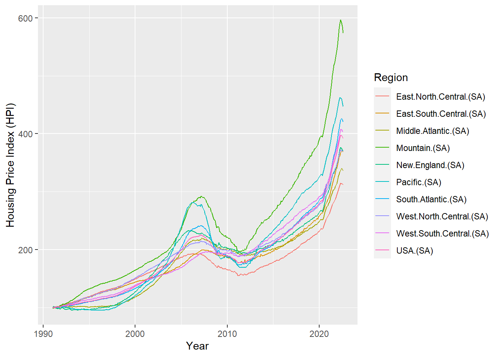
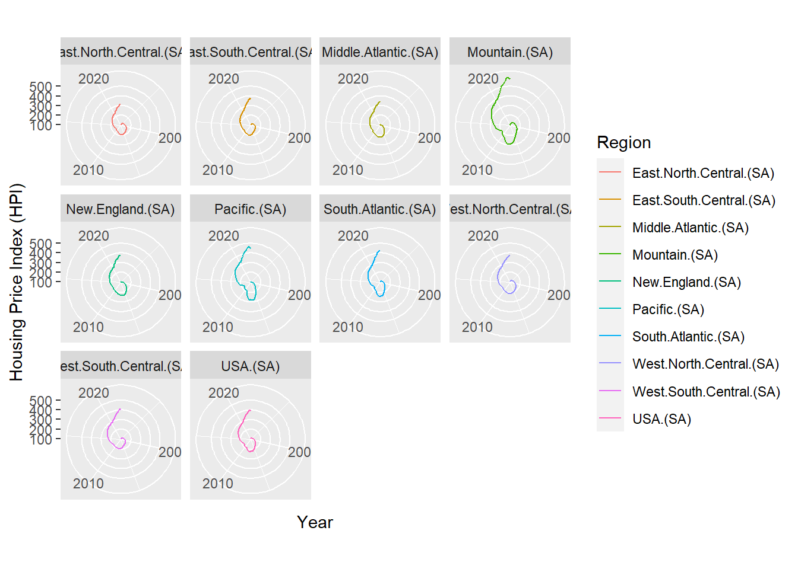
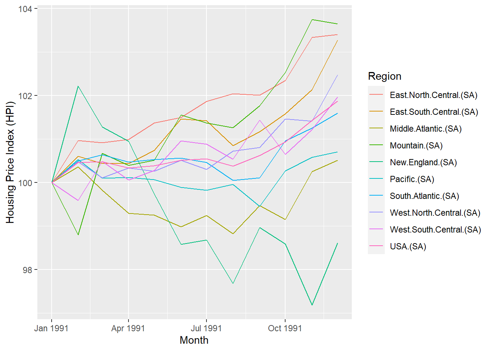
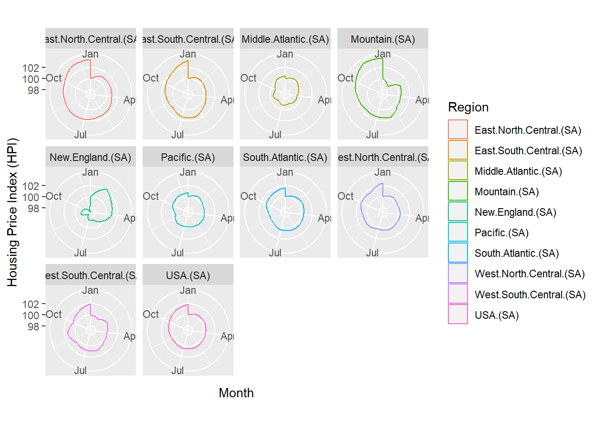

library(tidyverse)
# install.packages("openxlsx")
library(openxlsx)
hpi <- read.xlsx(xlsxFile = "https://github.com/aldenfelix/aldenfelix.github.io/raw/main/Data/HPI_PO_monthly_hist.xlsx",
startRow = 4,
detectDates = TRUE)
head(hpi) Month East.North.Central.(NSA) East.North.Central.(SA)
1 1991-01-01 100.00 100.00
2 1991-02-01 100.91 100.97
3 1991-03-01 101.31 100.92
4 1991-04-01 101.70 100.99
5 1991-05-01 102.33 101.37
6 1991-06-01 102.78 101.50
East.South.Central.(NSA) East.South.Central.(SA) Middle.Atlantic.(NSA)
1 100.00 100.00 100.00
2 101.02 100.61 100.14
3 100.87 100.44 100.07
4 100.81 100.44 99.59
5 101.14 100.74 99.72
6 102.00 101.46 99.86
Middle.Atlantic.(SA) Mountain.(NSA) Mountain.(SA) New.England.(NSA)
1 100.00 100.00 100.00 100.00
2 100.36 98.43 98.80 101.71
3 99.82 100.26 100.67 101.48
4 99.29 100.32 100.40 100.96
5 99.25 100.71 100.51 99.70
6 98.98 102.08 101.56 99.09
New.England.(SA) Pacific.(NSA) Pacific.(SA) South.Atlantic.(NSA)
1 100.00 100.00 100.00 100.00
2 102.22 100.12 100.53 100.59
3 101.28 99.94 100.10 101.02
4 100.95 100.15 100.12 100.91
5 99.74 100.31 100.07 100.78
6 98.58 100.43 99.89 101.31
South.Atlantic.(SA) West.North.Central.(NSA) West.North.Central.(SA)
1 100.00 100.00 100.00
2 100.50 100.47 100.48
3 100.64 100.38 100.11
4 100.47 100.80 100.34
5 100.53 100.74 100.26
6 100.56 101.39 100.51
West.South.Central.(NSA) West.South.Central.(SA) USA.(NSA) USA.(SA)
1 100.00 100.00 100.00 100.00
2 99.86 99.59 100.40 100.46
3 100.64 100.49 100.68 100.48
4 100.38 100.06 100.68 100.34
5 100.80 100.28 100.84 100.39
6 101.98 100.96 101.35 100.51summary(hpi) Month East.North.Central.(NSA) East.North.Central.(SA)
Min. :1991-01-01 Min. :100.0 Min. :100.0
1st Qu.:1998-11-23 1st Qu.:141.4 1st Qu.:141.2
Median :2006-10-16 Median :169.8 Median :168.5
Mean :2006-10-16 Mean :172.2 Mean :170.9
3rd Qu.:2014-09-08 3rd Qu.:191.7 3rd Qu.:190.2
Max. :2022-08-01 Max. :321.4 Max. :315.0
East.South.Central.(NSA) East.South.Central.(SA) Middle.Atlantic.(NSA)
Min. :100.0 Min. :100.0 Min. : 99.59
1st Qu.:138.4 1st Qu.:138.0 1st Qu.:109.92
Median :182.3 Median :180.8 Median :194.69
Mean :180.8 Mean :179.7 Mean :177.89
3rd Qu.:200.7 3rd Qu.:199.1 3rd Qu.:214.54
Max. :377.3 Max. :371.0 Max. :345.90
Middle.Atlantic.(SA) Mountain.(NSA) Mountain.(SA) New.England.(NSA)
Min. : 98.82 Min. : 98.43 Min. : 98.8 Min. : 94.54
1st Qu.:109.73 1st Qu.:154.47 1st Qu.:154.8 1st Qu.:114.20
Median :194.15 Median :220.03 Median :219.1 Median :201.13
Mean :176.68 Mean :236.95 Mean :236.0 Mean :187.24
3rd Qu.:213.91 3rd Qu.:285.47 3rd Qu.:283.7 3rd Qu.:226.23
Max. :340.60 Max. :604.91 Max. :596.5 Max. :383.37
New.England.(SA) Pacific.(NSA) Pacific.(SA) South.Atlantic.(NSA)
Min. : 95.1 Min. : 95.11 Min. : 95.17 Min. :100.0
1st Qu.:114.1 1st Qu.:109.52 1st Qu.:109.62 1st Qu.:125.5
Median :200.6 Median :186.65 Median :186.61 Median :186.0
Mean :186.0 Mean :200.89 Mean :200.14 Mean :190.9
3rd Qu.:225.9 3rd Qu.:266.23 3rd Qu.:264.60 3rd Qu.:233.3
Max. :376.7 Max. :468.79 Max. :462.48 Max. :432.4
South.Atlantic.(SA) West.North.Central.(NSA) West.North.Central.(SA)
Min. :100.0 Min. :100.0 Min. :100.0
1st Qu.:125.2 1st Qu.:142.4 1st Qu.:142.3
Median :185.7 Median :198.0 Median :196.0
Mean :189.5 Mean :193.1 Mean :191.8
3rd Qu.:231.4 3rd Qu.:216.1 3rd Qu.:214.4
Max. :426.3 Max. :380.1 Max. :372.3
West.South.Central.(NSA) West.South.Central.(SA) USA.(NSA)
Min. : 99.86 Min. : 99.59 Min. :100.0
1st Qu.:130.96 1st Qu.:130.69 1st Qu.:127.8
Median :188.62 Median :188.66 Median :188.0
Mean :189.46 Mean :188.29 Mean :189.0
3rd Qu.:223.25 3rd Qu.:221.44 3rd Qu.:222.4
Max. :415.36 Max. :407.44 Max. :404.3
USA.(SA)
Min. :100.0
1st Qu.:127.6
Median :187.3
Mean :187.8
3rd Qu.:221.8
Max. :397.1 # Select seasonally adjusted variables
# NOTE: TO INCLUDE PARENTHESES IN SEARCH USE \\ AS SEEN BELOW
sa_vars <- hpi %>%
select(grep("\\(SA\\)|Month", colnames(hpi)))
# install.packages("reshape2")
library(reshape2)
# Turn data from wide to long format
sa_hpi <- melt(sa_vars, id.vars = "Month")
# All sa data
ggplot(sa_hpi, aes(x = Month, y = value,
group = variable,
color = variable)) +
xlab("Year") + ylab("Housing Price Index (HPI)") +
labs(color = "Region") +
geom_line() +
xlab("Year") + ylab("Housing Price Index (HPI)") +
labs(color = "Region")
# All sa data polar plot
ggplot(sa_hpi, aes(x = Month,
y = value,
group = variable, color = variable)) +
geom_line() +
coord_polar() +
xlab("Year") + ylab("Housing Price Index (HPI)") +
labs(color = "Region") +
facet_wrap(~variable)
# Line plot by specific year
# Replace "1991" with input year
ggplot(sa_hpi %>% filter(grepl("1991", Month)),
aes(x = Month, y = value,
group = variable, color = variable)) +
geom_line() +
xlab("Month") + ylab("Housing Price Index (HPI)") +
labs(color = "Region")
# Facet wrapped polar grids by specific year
# Replace "1991" with input year
ggplot(sa_hpi %>% filter(grepl("1991", Month)),
aes(x = Month, y = value,
group = variable, color = variable)) +
geom_polygon(fill = NA) +
coord_polar() +
facet_wrap(~variable) +
xlab("Month") + ylab("Housing Price Index (HPI)") +
labs(color = "Region")